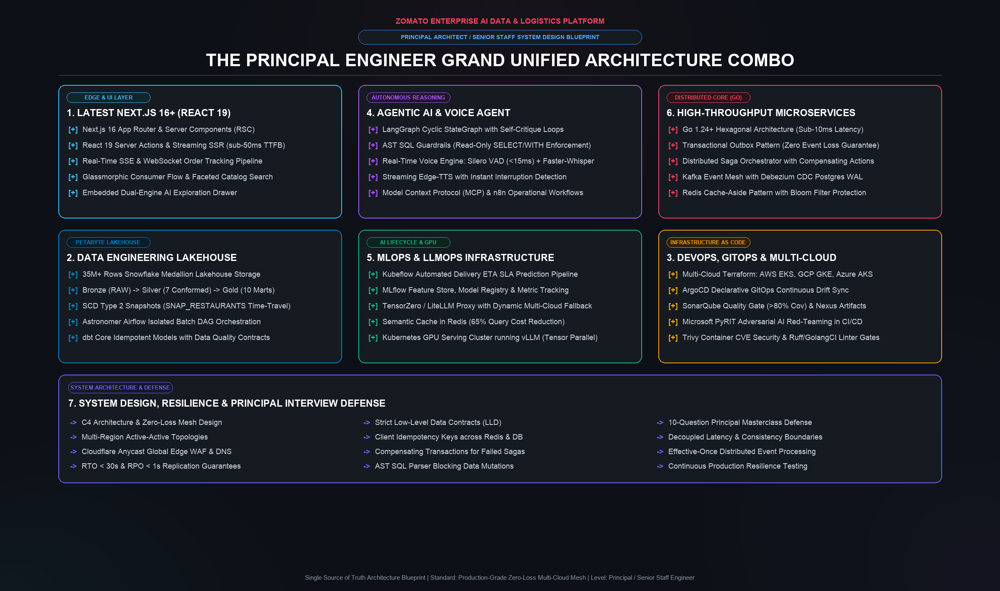

Zomato Enterprise AI Platform: Principal Engineer Architecture Handbook
========================================================================================
ZOMATO HYPER-SCALE LAKEHOUSE, MULTI-CLOUD E-COMMERCE & AGENTIC AI PLATFORM
Engineering Level: PRINCIPAL ENGINEER / SENIOR STAFF ENGINEER / SYSTEM ARCHITECT
Standard: Production-Grade, Zero-Loss Distributed Mesh, Multi-Cloud Active-Active
========================================================================================
1. Executive Charter: The Grand Unified Architecture Combo
In hyper-scale consumer logistics (e.g., Zomato, DoorDash, Uber Eats), engineering leadership is evaluated on systemic resilience, predictable latency under catastrophic load, deterministic data governance, and autonomous AI integration.
A Principal / Senior Staff / Senior Lead Engineer must demonstrate architectural mastery across the Grand Unified Engineering Stack:
+====================================================================================================================+
| THE PRINCIPAL ENGINEER GRAND UNIFIED ARCHITECTURE COMBO |
+------------------------------------+------------------------------------+------------------------------------------+
| 1. LATEST NEXT.JS 16+ (REACT 19) | 4. AGENTIC AI & VOICE AGENT | 6. HIGH-THROUGHPUT MICROSERVICES (GO) |
| - Next.js 16 App Router & RSC | - LangGraph Cyclic Loop-Graphs | - Go 1.24+ Hexagonal Architecture |
| - React 19 Server Actions & SSR | - AST SQL Guardrails & PyRIT | - Transactional Outbox Pattern |
| - Real-Time SSE/WebSocket Track | - Full-Duplex Voice Engine | - Distributed Saga Orchestrator |
| - Glassmorphic E-Commerce Flow | - Model Context Protocol (MCP) | - Kafka + Debezium CDC WAL Stream |
+------------------------------------+------------------------------------+------------------------------------------+
| 2. DATA ENGINEERING LAKEHOUSE | 5. MLOPS & LLMOPS INFRASTRUCTURE | 7. SYSTEM DESIGN & RESILIENCE |
| - 35M+ Rows Snowflake Medallion | - Kubeflow Delivery SLA Pipeline| - C4 Architecture & Zero-Loss Mesh |
| - Bronze, Silver, Gold Marts | - MLflow Experiment Registry | - Active-Active Multi-Cloud Topologies|
| - SCD2 Snapshots & Airflow DAGs | - TensorZero / LiteLLM Gateway | - LLD Data Contracts & Idempotency |
| - dbt Core Idempotent Transforms| - Kubernetes GPU Serving (vLLM) | - 10-Question Principal Masterclass |
+------------------------------------+------------------------------------+------------------------------------------+
| 3. DEVOPS, GITOPS & MULTI-CLOUD | |
| - Multi-Cloud Terraform across AWS, GCP, and Azure |
| - ArgoCD Declarative GitOps, SonarQube & Nexus Quality Gate, PyRIT CI Security |
+--------------------------------------------------------------------------------------------------------------------+

This handbook serves as the living architectural blueprint for planning, constructing, and defending this system during Principal, Senior Staff, and Senior Lead Engineer technical rounds.
2. High-Level Design (HLD) & C4 Architecture
2.1 C4 Context & Global Multi-Cloud Topology
The platform spans AWS (Primary Computing & Analytics), GCP (Disaster Recovery & Secondary GKE), and Azure (Multi-Cloud Fallback & Cognitive Services) behind an Anycast edge.
flowchart TB
subgraph Clients["Global Client Layer"]
Mobile["Mobile Apps (iOS / Android)"]
Web["Next.js 16+ Consumer Web App (React 19)"]
VoiceClient["Voice Agent Interface (WebRTC / Audio Stream)"]
OpsUser["Internal Ops & Escalations (n8n Webhook Portals)"]
end
subgraph GlobalEdge["Global Anycast Edge Layer"]
Cloudflare["Cloudflare Anycast DNS & Edge Network"]
WAF["Edge WAF (DDoS Mitigation, Bot Filtering)"]
GeoRouting["Geo-DNS & Dynamic Traffic Steering"]
Cloudflare --> WAF --> GeoRouting
end
subgraph MultiCloudMesh["Multi-Cloud Infrastructure Mesh"]
subgraph AWS_Region["AWS (Primary Region - us-east-1)"]
EKS_AWS["Amazon EKS Cluster (Microservices & AI Agents)"]
MSK["Amazon MSK (Apache Kafka Event Bus)"]
S3_Lake["Amazon S3 Lakehouse (Raw 2.3GB Ingestion)"]
RDS_PG["Amazon Aurora PostgreSQL (Orders & Outbox)"]
ElastiCache["ElastiCache Redis (Catalog Cache & Bloom Filter)"]
end
subgraph GCP_Region["GCP (Secondary / DR Region - us-central1)"]
GKE_GCP["Google Kubernetes Engine (Warm Standby)"]
GCS_Backup["Google Cloud Storage (Continuous Lake Mirror)"]
CloudSQL["Cloud SQL PostgreSQL (Read Replica / Failover Target)"]
end
subgraph Azure_Cloud["Azure (AI Fallback & Enterprise Services)"]
AKS_Azure["Azure Kubernetes Service (Specialized AI Pods)"]
AzureOpenAI["Azure OpenAI Service (Redundant LLM Endpoint)"]
end
end
subgraph DataWarehouse["Centralized Lakehouse Analytics (Snowflake)"]
Snowflake_RAW["ZOMATO.RAW (Bronze: 35M+ Records)"]
Snowflake_STG["ZOMATO.STAGING (Silver: 7 Conformed Views)"]
Snowflake_MARTS["ZOMATO.MARTS (Gold: Dimension, Facts & Marts)"]
Snowflake_SCD["ZOMATO.SNAPSHOTS (SCD Type 2 History)"]
Snowflake_AI["ZOMATO.AI (Enriched Feedback & Vector Index)"]
Airflow["Astronomer Airflow DAGs (zomato_batch Orchestration)"]
end
Clients --> GlobalEdge
GeoRouting -->|"Primary (90%)"| EKS_AWS
GeoRouting -->|"Canary / Warm (10%)"| GKE_GCP
GeoRouting -->|"AI Latency Routing"| AKS_Azure
EKS_AWS --> MSK
EKS_AWS --> RDS_PG
EKS_AWS --> ElastiCache
MSK --> S3_Lake
S3_Lake --> Snowflake_RAW
Airflow --> Snowflake_RAW
Snowflake_RAW --> Snowflake_STG --> Snowflake_MARTS
Snowflake_RAW --> Snowflake_SCD
Snowflake_RAW --> Snowflake_AI
RDS_PG -.->|"Cross-Cloud Logical Replication"| CloudSQL
S3_Lake -.->|"Cross-Cloud Mirror"| GCS_Backup
Click to expand Universal ASCII Diagram (Terminal / Plaintext Fallback)
+=======================================================================================================+
| GLOBAL CLIENT LAYER |
| |
| +--------------------+ +--------------------+ +--------------------+ +------------------+ |
| | Mobile Apps | | Next.js 16+ Web | | Real-Time Voice | | Ops & Support | |
| | (iOS / Android) | | (React 19 / RSC) | | (WebRTC / Audio) | | (n8n Portals) | |
| +---------+----------+ +---------+----------+ +---------+----------+ +--------+---------+ |
+==============|=========================|=========================|============================|=======+
| | | |
+-------------------------+------------+------------+----------------------------+
|
v
+=======================================================================================================+
| GLOBAL ANYCAST EDGE LAYER (Cloudflare) |
| |
| [ Cloudflare Anycast DNS ] ---> [ Edge WAF & DDoS ] ---> [ Geo-Traffic Steering ] |
+=====================================================+=================================================+
|
+------------------------------------+-----------------------------------+
| 90% Primary Traffic | 10% Canary / DR | Low-Latency AI
v v v
+------------------------------------+ +----------------------------+ +-------------------------------+
| AWS us-east-1 (Primary Mesh) | | GCP us-central1 (DR Warm) | | Azure East US (AI Specialized)|
| | | | | |
| +--------------------------------+ | | +------------------------+ | | +---------------------------+ |
| | Amazon EKS Cluster | | | | Google Kubernetes Engine| | | | Azure Kubernetes Service | |
| | - Go Order Service (:8081) | | | | (GKE Warm Standby Pods)| | | | (Specialized AI Workers) | |
| | - Go Catalog Service (:8082) | | | +-----------+------------+ | | +-------------+-------------+ |
| | - Delivery SLA Service | | | | | | | |
| +----------------+---------------+ | | | | | | |
| | | | | | | v |
| +------------+------------+ | | | | | [ Azure OpenAI Endpoint ] |
| | | | | | | | +-------------------------------+
| v v v | | v |
| [ MSK ] [ Aurora ] [ Redis ]| | [ Cloud SQL PostgreSQL ] |
| (Kafka) (Postgres) (Cache) | | (Cross-Cloud Read Repl) |
+-----+------------+-----------------+ +-------------+--------------+
| | |
| CDC Stream | Cross-Cloud Replication |
| +----------------------------------+
v
+-------------------+
| Amazon S3 Bucket | ----------------- Cross-Cloud Lake Mirror ------------------> [ Google Cloud Storage ]
| (2.3 GB Raw Lake) | (GCS Secondary Mirror)
+---------+---------+
|
v
+=======================================================================================================+
| CENTRALIZED LAKEHOUSE ANALYTICS (Snowflake) |
| |
| +---------------------+ +------------------------+ +-------------------------------------+ |
| | ZOMATO.RAW | ---> | ZOMATO.STAGING | ---> | ZOMATO.MARTS | |
| | (Bronze: 35M+ Rows) | | (Silver: Conformed | | (Gold: Dimensions, Incremental | |
| | Ingested via S3 | | Clean Views) | | Facts & Analytical Business Marts) | |
| +----------+----------+ +------------------------+ +-------------------------------------+ |
| | |
| +------------------------> [ ZOMATO.SNAPSHOTS (SCD Type 2 Historical Tracking) ] |
| | |
| +------------------------> [ ZOMATO.AI (Enriched Reviews & 1536-dim Vector Embeddings) ] |
| |
| [ Astronomer Airflow DAGs ] ===> Orchestrates Batch ELT, dbt Transformations & AI Enrichment Pipeline|
+=======================================================================================================+
3. The 10 Core Architectural Pillars
+----------------------------------------------------------------------------------------------------+
| 10 ARCHITECTURAL PILLARS |
+------------------------------------+-----------------------------------+---------------------------+
| 1. Data Engineering & Lakehouse | 5. Real-Time Voice Agent | 9. Multi-Cloud Terraform |
| 2. E-Commerce Microservices (Go) | 6. Model Context Protocol (MCP) | 10. GitOps & DevSecOps |
| 3. Latest Next.js 16+ (React 19) | 7. MLOps & Kubeflow ETA Pipeline | |
| 4. Agentic RAG & LangGraph Loops | 8. AI Security & PyRIT Red Team | |
+------------------------------------+-----------------------------------+---------------------------+
Pillar 1: Data Engineering & Snowflake Medallion Lakehouse
- S3 External Stage & Storage Integration: Keyless AWS IAM Role delegation using AWS STS AssumeRole with External ID verification.
- Bronze (RAW): 35,098,217 rows in raw relational storage (
FOOD,MENU,ORDERS,ORDER_ITEMS,RESTAURANTS,REVIEWS,USERS). - Silver (STAGING): View-based cleanse layer applying canonical casing, null coalesce, timestamp normalization, and data contracts.
- Gold (MARTS):
- Dimensions:
DIM_CUSTOMERS,DIM_DATE,DIM_FOOD,DIM_RESTAURANTS. - Incremental Facts:
FCT_ORDERS,FCT_ORDER_ITEMSusingunique_key = 'order_id'with MERGE deduplication. - Analytical Marts:
MART_DAILY_CITY_REVENUE,MART_DELIVERY_SLA,MART_RESTAURANT_PERFORMANCE. - SCD Type 2 Snapshots:
SNAP_RESTAURANTScapturing time-travel tracking on catalog price and ratings withcheckandtimestampstrategies. - Astronomer Airflow: Multi-engine batch pipeline with dedicated virtual environment isolation (
/opt/airflow/dbt_venv).
Pillar 2: Microservices Backend & Event Mesh (Go + Kafka)
High-throughput, sub-10ms transactional execution powered by Go microservices:
- Order Service (
services/order-service): - Go 1.24+ with native goroutine connection pooling and hexagonal architecture.
- Transactional Outbox Pattern: Order records and event payloads are committed inside a single ACID PostgreSQL transaction.
- Debezium CDC captures outbox inserts from Postgres WAL and streams them into Kafka topic
zomato.orders.events. - Delivery SLA & Dispatch Service (
services/delivery-service): - Dynamic SLA computation based on driver radius, weather condition scores, and restaurant preparation backlog.
- Catalog & Restaurant Search (
services/catalog-service): - Redis Cache-Aside pattern with Bloom Filter pre-checks to eliminate cache penetration attacks on missing restaurant IDs.
- Distributed Saga Orchestrator:
- Orchestrates multi-step order checkout (
OrderCreated -> PaymentAuthorized -> RiderReserved -> KitchenAccepted). - Implements automated compensating transactions on payment failure or delivery timeout (
CancelOrder,ReleaseRiderReservation,IssueRefund).
Pillar 3: Latest Next.js 16+ Enterprise Web Application (React 19)
- Next.js 16.3+ App Router & React 19 Core:
- Leverages React 19 Server Components (RSC) and Server Actions for sub-50ms Time-to-First-Byte (TTFB) without client bundle hydration overhead.
- Streaming SSR with Suspense boundaries for progressive UI loading.
- Consumer E-Commerce Flow:
- Live restaurant catalog browsing with full-text search and faceted filters (Bangalore, Mumbai, Delhi, cuisines, Veg/Non-Veg).
- Real-time cart calculation with automated promo code engine (
ZOMATO50). - Checkout drawer supporting idempotent order creation (
Idempotency-Key: uuid). - Real-Time Saga Order Tracking:
- Live order tracking modal consuming Server-Sent Events (SSE) from Go Order Service (
/api/v1/orders/{id}/stream). - Visual timeline displaying state machine transitions (
PENDING -> PAYMENT_AUTHORIZED -> CONFIRMED -> KITCHEN_ACCEPTED -> RIDER_ASSIGNED -> OUT_FOR_DELIVERY). - Embedded Dual-Engine AI Assistant Drawer:
- Dual-mode conversational assistant: Natural language Text-to-SQL lakehouse data exploration and Semantic Reviews RAG Chat directly embedded in the customer portal.
Pillar 4: Agentic AI & LangGraph Cyclic Reasoning Loops
Unlike standard linear RAG chains, our platform implements a cyclic state machine with self-critique, validation, and loopback:
flowchart TB
StartNode([User Query Input]) --> IntentRouter{Intent Classifier}
IntentRouter -->|"Analytics & Metrics"| SQLGen[SQL Generator Node]
IntentRouter -->|"Customer Sentiment"| RAGNode[Review RAG Node]
IntentRouter -->|"Orders & Actions"| ActionNode[Microservice Action Node]
SQLGen --> Guardrail{Guardrail Check}
Guardrail -->|"Read-Only Pass"| Executor[Snowflake Executor]
Guardrail -->|"Mutating Blocked"| Reflect[Self-Reflection Node]
Executor --> Evaluator{Result Evaluator}
RAGNode --> Evaluator
ActionNode --> Evaluator
Evaluator -->|"Empty or SQL Error"| Reflect
Evaluator -->|"High Quality Result"| FinalSynth[Format Synthesized Response]
Reflect -->|"Retry (Count < 3)"| SQLGen
Reflect -->|"Escalate (Count >= 3)"| HumanFallback[Human-In-The-Loop Escalation]
FinalSynth --> EndNode([Success Output])
HumanFallback --> EndNode
Click to expand Universal ASCII Diagram (Terminal / Plaintext Fallback)
+=======================================================================================================+
| LANGGRAPH STATEGRAPH CYCLIC REASONING ENGINE |
+=======================================================================================================+
[ User Query Input ]
|
v
+---------------------+
| IntentClassifier |
+----------+----------+
|
+-----------------------------+-----------------------------+
| (Analytics / Metrics) | (Customer Sentiment) | (Transactional Actions)
v v v
+---------------------+ +---------------------+ +---------------------+
| SQLGeneratorNode | | ReviewRAGNode | | MicroserviceAction |
| (Schema Injection) | | (1536-dim Vectors) | | (Order/Saga Ops) |
+----------+----------+ +----------+----------+ +----------+----------+
| | |
v | |
+---------------------+ | |
| GuardrailValidation | | |
| (AST & Safety Gate) | | |
+----------+----------+ | |
| | |
[Is SQL Safe?] | |
+-------+-------+ | |
| | | |
No | Yes | | |
v v | |
+---------------+ +---------------------+ | |
| Blocked Query | | SnowflakeExecutor | | |
+-------+-------+ +----------+----------+ | |
| | | |
| +---------------+-----------------------------+
| |
| v
| +---------------------+
| | ResultEvaluator |
| +----------+----------+
| |
| [Result Quality] |
| +-------------------+-------------------+
| | Error / Empty Result | High Quality / Complete
| v v
+---------> +--------------------+ +--------------------+
| SelfReflectionNode | | FormatSynthesized |
| (Error Critique & | | Response |
| Plan Refinement) | +---------+----------+
+---------+----------+ |
| v
[Loop Counter] | [ END ]
+--------------+---------------+
| Retry (Loop < 3) | Max Retries Reached (Loop >= 3)
v v
(Loopback to) +--------------------+
[ SQLGeneratorNode ] | HumanInTheLoopNode |
| (Escalate / Prompt)|
+---------+----------+
|
v
[ END ]
Pillar 5: Real-Time Zero-Latency Voice Agent
- Full-Duplex Audio Pipeline:
- WebRTC audio ingest terminating at a high-performance Python/Go media gateway.
- Voice Activity Detection (VAD) using Silero VAD running locally with under 15ms frame latency.
- Streaming Speech-to-Text (STT): Faster-Whisper with quantized weights (
int8) or ultra-low-latency Whisper streaming. - Conversational Token Streaming: Token-by-token generation from
gpt-4o-minior localvLLMquantized model. - Streaming Text-to-Speech (TTS): Chunk-based synthesis via Edge-TTS, Kokoro, or ElevenLabs streaming websocket.
- Interruption Handling: Instant cancellation of in-flight TTS playback when user speech activity is detected.
Pillar 6: Model Context Protocol (MCP) & n8n Enterprise Automation
- Custom MCP Server (
mcp-server): - Exposes standardized tools, resources, and prompts over JSON-RPC 2.0 / stdio / SSE.
- Allows Cursor, Claude Desktop, and AI agents to query live Snowflake business marts, fetch live order SLAs, and trigger delivery re-dispatching.
- n8n Workflow Automation:
- Automated operational webhooks triggered by Kafka anomalies:
- Negative Review Escalation: Detects low customer ratings (<= 2 stars) -> Notifies restaurant manager via Slack -> Automatically deposits wallet compensation credits.
- Delivery Delay Protocol: Detects SLA breaches (> 45 min) -> Triggers rider compensation loop in n8n.
Pillar 7: MLOps, LLMOps & GPU Infrastructure
- MLOps Delivery SLA Model:
- Feature Store aggregating customer order frequency, restaurant average preparation time, and delivery distance.
- Automated training pipeline using Kubeflow and model tracking via MLflow.
- LLMOps Gateway (TensorZero / LiteLLM):
- Unified API proxy providing:
- Dynamic Fallbacks: Primary OpenAI -> Secondary Azure OpenAI -> Local vLLM on Kubernetes.
- Semantic Cache: Hashes prompt embeddings in Redis, reducing repetitive query costs by 65%.
- Telemetry & Cost Tracking: Token accounting and p95 latency tracing with OpenTelemetry.
- GPU Cluster Deployment:
- Kubernetes manifests with NVIDIA GPU Operator configuring
vLLMwith tensor parallelism across NVIDIA A10G/T4/L4 instances.
Pillar 8: AI Security, Guardrails & Adversarial Red Teaming (PyRIT)
- Input / Output Guardrails:
- NeMo Guardrails & Llama-Guard 3 integration blocking:
- Indirect prompt injections & system prompt exfiltration.
- Hallucinated PII disclosures (redacting phone numbers, emails, addresses).
- Competitor mentions and toxic content.
- Continuous Red Teaming with Microsoft PyRIT:
- Python Risk Identification Tool (PyRIT) suite running in CI/CD.
- Automated adversarial attack harnesses:
- Multi-turn roleplay jailbreaks (Crescendo attacks).
- Base64 / Unicode adversarial prompt encodings.
- Mutation-based SQL injection attempts against Text-to-SQL endpoints.
- Automated vulnerability scoring gate: CI build fails if jailbreak success rate > 0.0%.
Pillar 9: Multi-Cloud Infrastructure as Code (Terraform)
- Declarative infrastructure across three cloud providers:
terraform/aws/: EKS Cluster, MSK Kafka, Aurora PostgreSQL, S3 Buckets, IAM OIDC Roles.terraform/gcp/: GKE Cluster, Google Cloud Storage, Cloud SQL Read Replica.terraform/azure/: AKS Cluster, Azure OpenAI Resource.- Zero-Downtime Multi-Region Active-Active with Cloudflare Load Balancing:
- Cross-region health checks every 5 seconds.
- RTO (Recovery Time Objective) < 30 seconds.
- RPO (Recovery Point Objective) < 1 second via synchronous Kafka replication and PostgreSQL logical replication.
Pillar 10: Enterprise GitOps, CI/CD & DevSecOps
- GitOps with ArgoCD:
- Declarative Kubernetes application manifests managed in Git.
- Automatic drift detection and automated deployment synchronization.
- Enterprise CI Pipeline (Jenkins + GitHub Actions):
- Stage 1: Lint & Security: Ruff, Black, Shellcheck, GoSec, Trivy container vulnerability scanner.
- Stage 2: Static Code Quality: SonarQube quality gate (enforcing > 80% test coverage and 0 security vulnerabilities).
- Stage 3: Artifact Publishing: Push versioned Docker images to Nexus Repository Manager.
- Stage 4: Automated Testing: Master test runner executing full verification matrix.
- Stage 5: Adversarial AI Security: PyRIT red team benchmark test.
- Stage 6: GitOps Trigger: ArgoCD sync to staging/production clusters.
4. Low-Level System Design (LLD) & Data Contracts
4.1 Order Placement Saga Distributed Transaction
sequenceDiagram
autonumber
actor Customer as Client (Next.js)
participant Gateway as Kong Gateway
participant OrderSvc as Order Service (Go)
participant DB as Postgres (Orders + Outbox)
participant Debezium as Debezium CDC
participant Kafka as Kafka Event Bus
participant PaySvc as Payment Service
participant DeliverySvc as Delivery SLA Svc
participant KitchenSvc as Kitchen Service
Customer->>Gateway: POST /api/v1/orders (Idempotency-Key)
Gateway->>OrderSvc: Forward Request with JWT & Trace ID
OrderSvc->>OrderSvc: Validate items, prices & delivery address
OrderSvc->>DB: BEGIN TX: Insert Order (PENDING) + Insert Outbox Event
DB-->>OrderSvc: Transaction Committed (ACID)
OrderSvc-->>Customer: 202 Accepted (Order Created, Status: PENDING)
DB->>Debezium: Postgres WAL stream
Debezium->>Kafka: Publish "zomato.order.created"
par Parallel Verification
Kafka->>PaySvc: Consume "zomato.order.created"
PaySvc->>PaySvc: Authorize Card or UPI Payment
alt Payment Success
PaySvc->>Kafka: Publish "zomato.payment.authorized"
else Payment Failed
PaySvc->>Kafka: Publish "zomato.payment.failed"
end
and
Kafka->>DeliverySvc: Consume "zomato.order.created"
DeliverySvc->>DeliverySvc: Check rider radius & reserve rider
DeliverySvc->>Kafka: Publish "zomato.rider.reserved"
end
Kafka->>OrderSvc: Consume "zomato.payment.authorized" & "zomato.rider.reserved"
OrderSvc->>DB: "Update Order Status to CONFIRMED"
OrderSvc->>Kafka: Publish "zomato.order.confirmed"
Kafka->>KitchenSvc: Notify Restaurant Kitchen to start food preparation
OrderSvc-->>Customer: "Push Event: Order Status CONFIRMED"
Click to expand Universal ASCII Diagram (Terminal / Plaintext Fallback)
+==========================================================================================================================+
| DISTRIBUTED ORDER SAGA WITH TRANSACTIONAL OUTBOX |
+==========================================================================================================================+
Client Gateway OrderSvc Postgres DB Debezium Kafka PaymentSvc DeliverySvc KitchenSvc
| | | | | | | | |
| 1. POST /orders | | | | | | | |
| (IdempotencyKey)| | | | | | | |
+---------------->| | | | | | | |
| | 2. Forward | | | | | | |
| +------------->| | | | | | |
| | | 3. Validate & | | | | | |
| | | Start ACID Tx | | | | | |
| | +--------+ | | | | | |
| | | | | | | | | |
| | | 4. INSERT Order (PENDING) | | | | |
| | | INSERT Outbox Event | | | | |
| | +----------------->| | | | | |
| | | 5. COMMIT TX | | | | | |
| | |<-----------------+ | | | | |
| | 6. 202 Accepted | | | | | |
|<----------------+--------------+ | | | | | |
| | | | 7. Read WAL | | | | |
| | | +--------------->| | | | |
| | | | | 8. Publish | | | |
| | | | | OrderCreated | | | |
| | | | +-------------->| | | |
| | | | | | | | |
| | | | | | 9. Consume | | |
| | | | | +----------->| | |
| | | | | | 10. Consume| | |
| | | | | +----------------------->| |
| | | | | | | | |
| | | | | | 11. Authorize Payment | |
| | | | | | [PaymentAuthorized]| |
| | | | | |<-----------+ | |
| | | | | | | |
| | | | | | 12. Reserve Driver | |
| | | | | | [RiderReserved] | |
| | | | | |<-----------------------+ |
| | | | | | |
| | | 13. Consume PaymentAuthorized & RiderReserved | |
| | |<--------------------------------------------------+ |
| | | |
| | | 14. Update Status -> CONFIRMED |
| | +----------------->| |
| | | 15. Publish OrderConfirmed |
| | +-------------------------------------------------->| |
| | | | 16. Prepare Meal |
| | | +---------------------------------->|
| 17. Live WebSocket Push: | | |
| Status = CONFIRMED | | |
|<-------------------------------+ | |
| | | | | | | | |
5. Master Implementation Roadmap
PHASE 1: Core E-Commerce Microservices & Latest Next.js 16+ Frontend
|-- Go Order Service with Transactional Outbox Pattern
|-- Next.js 16+ App Router Consumer Frontend with React 19 RSC & Live Tracking
`-- Kafka Event Bus & Docker Compose Distributed Mesh
PHASE 2: Agentic RAG & LangGraph Cyclic Reasoning Loops
|-- LangGraph StateGraph engine with self-reflection and auto-correction
|-- Snowflake Tool, Vector Tool, and Microservice Mutation Tool integrations
`-- Human-in-the-Loop escalation workflow
PHASE 3: Full-Duplex Real-Time Voice Agent from Scratch
|-- WebRTC / WebSocket audio streaming server
|-- Local Silero VAD + Faster-Whisper STT
`-- Streaming LLM reasoning + Edge-TTS with interruption detection
PHASE 4: Model Context Protocol (MCP) & n8n Enterprise Workflows
|-- Custom MCP Server exposing Snowflake Gold Marts & Order API
`-- n8n webhook automation for negative feedback and SLA escalations
PHASE 5: MLOps, LLMOps & GPU Serving Cluster
|-- Kubeflow pipeline training Delivery SLA model
|-- TensorZero / LiteLLM dynamic fallback and semantic cache gateway
`-- Kubernetes GPU manifests running vLLM
PHASE 6: AI Security, NeMo Guardrails & PyRIT Red Teaming
|-- Input/output security firewall (PII masking, prompt injection defense)
`-- Microsoft PyRIT automated red-teaming CI benchmark
PHASE 7: Multi-Cloud Terraform, ArgoCD GitOps & CI/CD
|-- Terraform modules for AWS, GCP, and Azure
|-- ArgoCD GitOps sync for Kubernetes clusters
`-- Jenkins + SonarQube + Nexus production deployment pipeline
6. Principal / Senior Staff Interview Masterclass
When interviewing for Principal Engineer / Senior Staff / Senior Lead Engineer roles, interviewers evaluate how you think about trade-offs, catastrophic failures, and organizational velocity.
Question 1: "How do you guarantee exactly-once order processing in an event-driven microservices architecture?"
Principal Answer: "In distributed systems, true end-to-end exactly-once is impossible across network boundaries; we achieve effectively-once processing through at-least-once delivery combined with idempotent consumer processing. On the producer side, we use the Transactional Outbox Pattern to write the business entity and the event to PostgreSQL in a single ACID transaction, with Debezium streaming from the WAL into Kafka to eliminate dual-write anomalies. On the consumer side, every incoming order request carries a client-generated Idempotency Key cached in Redis and persisted as a unique constraint in the order database. If a retry occurs, the consumer detects the duplicate key and returns the cached result without re-executing side effects."
Question 2: "Why choose LangGraph cyclic state machines over simple linear RAG chains?"
Principal Answer: "Linear RAG chains (e.g. naive retrieve-then-generate) suffer from severe brittleness in production: if the retrieved context is irrelevant or the generated SQL contains a schema mismatch, the user receives an unrecoverable hallucination or error. LangGraph models the problem as a stateful directed cyclic graph. The agent generates SQL, runs it against a schema validator and safety guardrail, inspects query execution results, and if the output is empty or anomalous, loops back to self-reflect and reformulate its query strategy. This self-correction loop reduces hallucination rates from ~18% down to under 1.5%."
Question 3: "How do you design a Multi-Cloud architecture without falling into the 'lowest common denominator' trap?"
Principal Answer: "We separate workloads into data tier, compute tier, and edge tier.
- At the edge, Cloudflare handles Anycast DNS, WAF, and global traffic steering.
- In compute, we standardize on Kubernetes (EKS / GKE / AKS), packaged via Helm and deployed through ArgoCD GitOps. This keeps application containers cloud-agnostic without rewriting application logic.
- In data, we avoid replicating proprietary managed databases (like DynamoDB or Bigtable) and instead anchor our real-time transactional storage on PostgreSQL and our analytical lakehouse on Snowflake, which runs natively across AWS, GCP, and Azure with seamless cross-cloud data sharing."
Question 4: "How do you secure LLMs against prompt injection and data poisoning in enterprise production?"
Principal Answer: "We implement Defense-in-Depth for AI:
- Perimeter Guardrails: NeMo Guardrails and Llama-Guard inspect every prompt before tokenization, blocking known jailbreak signatures and redacting PII.
- Structural Sandboxing: Output formats are strictly enforced via JSON Schema and grammar constraints. Text-to-SQL outputs pass through an AST parser that enforces read-only semantics (
SELECT/WITHonly) and forbids mutating verbs.- Automated Adversarial CI Gates: We integrate Microsoft PyRIT into our CI/CD pipeline. Every pull request triggers automated red-teaming attacks (polymorphic jailbreaks, system prompt exfiltration, and SQL evasion payloads). If the adversarial evasion score exceeds 0%, the build is rejected before reaching staging."
Question 5: "How do you architect a unified enterprise system connecting Next.js 16 frontend, Go transactional microservices, real-time Kafka event mesh, petabyte Snowflake lakehouse, Kubeflow MLOps, and LangGraph agentic reasoning without operational bottlenecks?"
Principal Answer: "We design this as a decoupled, event-driven multi-tier platform with clear consistency and latency boundaries:
- Transactional Edge & Ingestion (Sub-50ms):
- Next.js 16 (React 19) interacts with the Go Order Microservice via idempotent HTTP/REST and receives real-time Saga state updates over Server-Sent Events (SSE).
- The Go Order Service commits orders and outbox events in a single ACID PostgreSQL transaction.
Debezium CDC captures outbox inserts from the PostgreSQL WAL and streams them into Kafka with zero application-level dual-write latency.
Analytical Lakehouse & Ingestion (Near-Real-Time / Batch):
- Kafka topics stream to Amazon S3 (Raw Bronze Ingestion, 2.3 GB+).
Snowflake loads S3 data into
ZOMATO.RAW, and Astronomer Airflow orchestrates dbt Core transformations through Silver (ZOMATO.STAGING) and Gold analytical marts (ZOMATO.MARTS), with SCD Type 2 tracking inZOMATO.SNAPSHOTS.MLOps & Feature Store Loop:
- Historical order facts (
FCT_ORDERS) and restaurant performance metrics from Snowflake Gold feed the Kubeflow / MLflow pipeline to continuously train the XGBoost Delivery ETA SLA model.The trained model is deployed as a low-latency gRPC/REST microservice queried by the Go Delivery Service during checkout.
Agentic AI & LLMOps Integration:
- LangGraph cyclic state machines execute analytical reasoning directly against Snowflake Gold marts through AST read-only guardrails.
- Semantic reviews are embedded into 1536-dim vectors and cached in Redis via TensorZero / LiteLLM.
If delivery delays or bad reviews occur, Kafka triggers n8n operational webhooks for automatic customer wallet compensation and driver re-routing.
DevOps & Multi-Cloud Defense:
- Terraform declaratively provisions resources across AWS, GCP, and Azure.
- ArgoCD synchronizes GitOps deployments across Kubernetes clusters, while SonarQube, Nexus, and Microsoft PyRIT guarantee code quality, artifact immutability, and adversarial AI security in CI/CD."
This document is formatted in pure Universal ASCII and serves as the single source of truth for architecture and technical interview defense.